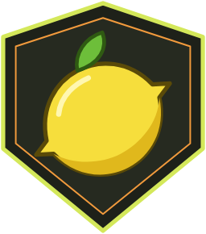

Родителям
Коротко и без жаргона: что это за сервер, что в нём может беспокоить и как вы можете держать всё под контролем. Обновлено: 13 ноября 2026.
Что такое Lima Rust
Rust это компьютерная игра для компьютера (продаётся в Steam, студия Facepunch). Игроки выживают на общей карте: добывают ресурсы, строят дома, торгуют, дерутся. Lima Rust это частный сервер этой игры: отдельный «мир», где играют вместе друзья и знакомые. Он не продаёт сами игры и не связан с Facepunch.
Чем сервер удобен и безопасен
- Правила и модерация. Оскорбления, угрозы, читы и обман игроков запрещены. Жалобу можно подать в Discord, администрация разбирает её и может выдать мут, кик или бан.
- Защита от читов. На сервере работает проверка на нечестную игру. Читеры блокируются.
- Личные данные. Мы не просим пароль от Steam. Вход на сайт идёт через Steam, Google или Discord, пароль мы не видим. Подробно в политике конфиденциальности.
- Общение. В игре есть общий текстовый чат. Голосовой чат и Discord добровольные: ребёнок может в них не заходить, игра от этого не ломается.
- Нет азартных игр за деньги. Предметы со случайным призом (кейсы, рулетка) на сервере открываются только за игровую валюту, которую заработал сам игрок, не за реальные деньги.
Деньги: как устроены покупки
- Сейчас приём платежей выключен. Деньги не списываются. Когда оплата включится, мы скажем об этом на сайте и в Discord.
- Платит родитель или с его согласия. При покупке ребёнком нужно подтвердить, что вы согласны. Оплата проходит на защищённой странице магазина-посредника, данные банковской карты мы не видим и не храним.
- Тихого автосписания нет. Привилегия оформляется на месяц. Продление происходит только после вашего подтверждения, перед окончанием срока приходит напоминание.
- Возврат. Если привилегия не выдана или платёж списан дважды, деньги вернём. Условия описаны в условиях покупки.
Как вы можете контролировать
| Что нужно | Как сделать |
|---|---|
| Ограничить траты | Не привязывайте свою карту к устройству ребёнка. Платите сами или поставьте лимит в приложении банка. |
| Ограничить время игры | Родительский контроль Windows (Microsoft Family Safety) или Steam Family. Игра сама не ограничивает время. |
| Посмотреть, что покупалось | На сайте в разделе «Мои привилегии» введите Steam ID ребёнка: видно, что действует и до какой даты. |
| Ограничить общение | Ребёнок может не писать в общий чат, не вступать в Discord и не привязывать его: игра от этого не страдает. Нарушителю в чате администрация выдаёт мут. |
| Остановить или отозвать покупку | Напишите нам в Discord, и мы остановим продление или вернём платёж по условиям выше. |
Что делать, если случилась проблема
- Сохраните скриншот или текст сообщения.
- Напишите в наш Discord (канал жалоб или «тикет»). Администрация ответит и, если нужно, накажет нарушителя.
- Если вопрос по платежу, укажите дату, сумму и Steam ID. Мы разберёмся и вернём деньги, если ошибка наша.
Сколько данных мы собираем
Только необходимое для игры и входа на сайт: Steam ID и публичное имя профиля, игровую статистику (часы, ранг, золотые лимоны) и, если вы сами привязали, Discord или Telegram. Реклама, продажа данных и слежка за переписками не используются. Подробности и права на удаление данных в политике конфиденциальности.
Контакты
Вопросы родителей: напишите в Discord сервера Lima Rust. Ссылка на Discord есть на главной странице.
English: Lima Rust is a private community server for the game Rust (violence is part of the game; check the game's age rating on Steam). Free to play; privileges are optional cosmetic conveniences, not combat advantages. Payments are currently off. A parent must pay or agree; we never see card data. Questions: Discord.